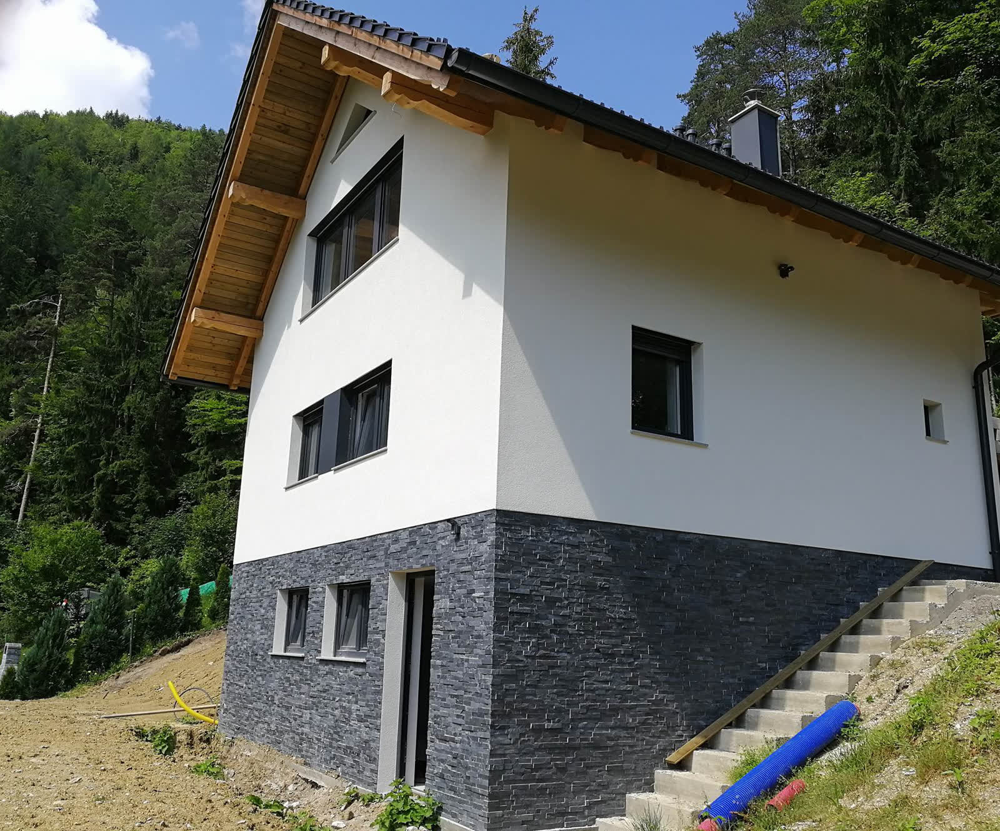
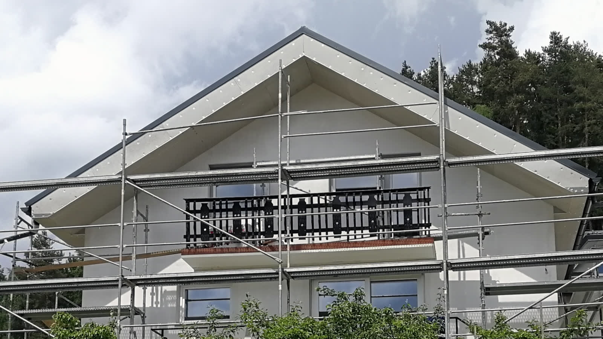
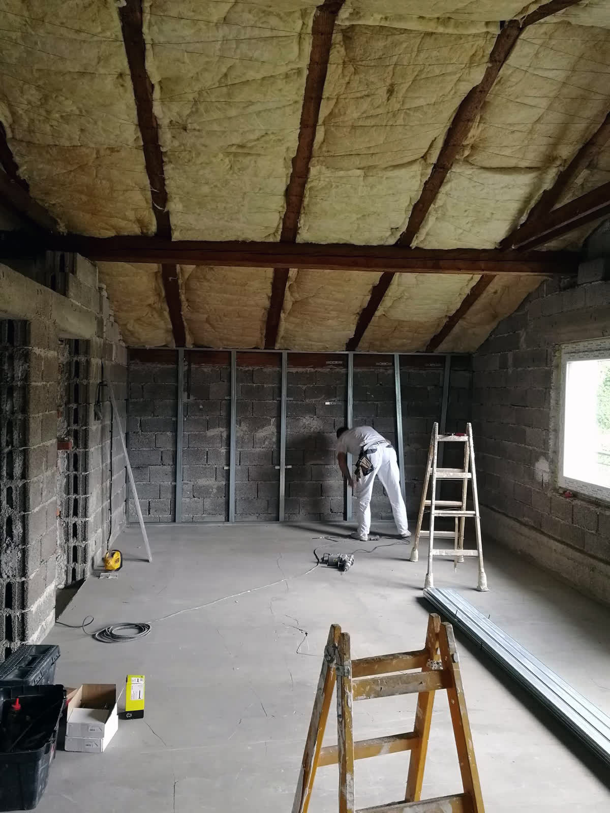
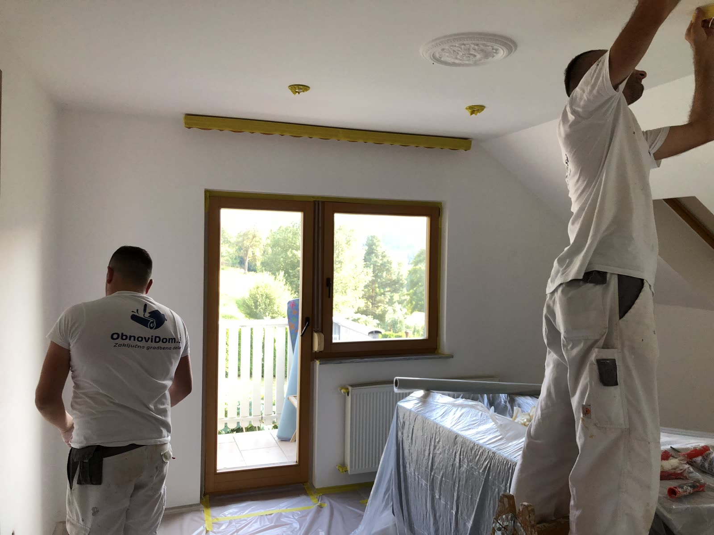
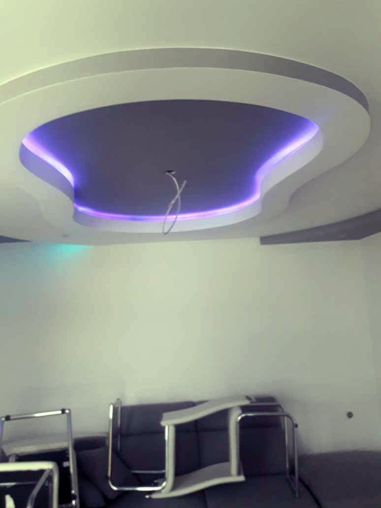

Slikopleskarstvo
Vsa notranja in zunanja slikopleskarska dela.
Slikopleskarstvo, toplotno izolacijske fasade in suhomontažna dela na Koroškem. Pred začetkom del se z vami brezplačno posvetujemo.



Specializirani smo za slikopleskarska dela, izdelavo toplotno izolacijskih fasad, adaptacijo domov in poslovnih prostorov ter suhomontažna dela.
Vsa notranja in zunanja slikopleskarska dela.
Izdelava toplotno izolacijskih fasad po najnovejših standardih.
Montažne predelne stene, spuščen strop, suhi estrihi in ostala suhomontažna dela.
Adaptacija hiš, stanovanj ter poslovnih in nebivalnih prostorov.
Izposoja in montaža gradbenega odra ter zaščitne opreme.
Nudimo razna svetovanja s področja gradbenih del.
Fotografije z naših gradbišč na Koroškem: fasade, spuščeni stropi, stenske obloge in pleskanje.






Naša ekipa že vrsto let sodeluje z najboljšimi strokovnjaki v regiji za izvedbo keramičarskih, vodovodarskih, elektroinštalacijskih in ostalih gradbenih del. Zagotovimo vam lahko hišo na ključ.
Podjetje Obnovi Dom je na Koroškem prepoznavno po trdem delu, uigrani ekipi in bogatih izkušnjah na področju fasaderstva, slikopleskarstva, suhomontažnih in ostalih zaključnih gradbenih del. Želimo ostati kvaliteten in zaupanja vreden izvajalec.
Po navedbi podjetja delajo z materiali proizvajalcev KEMA, Baumit, Caparol, Weber, JUB in Knauf.
Pokličite ali pišite. Z veseljem se pred začetkom del z vami posvetujemo in predlagamo najboljšo rešitev.